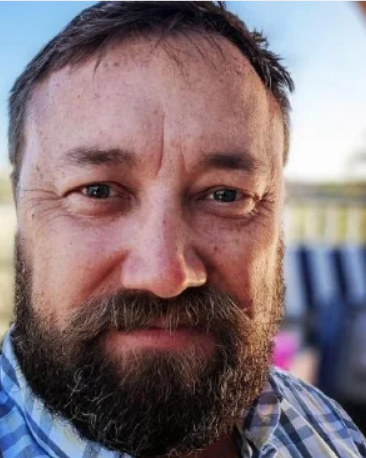
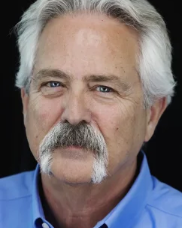
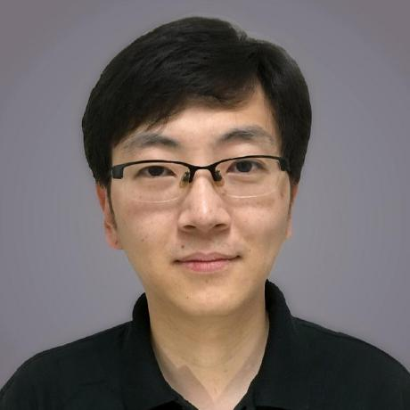
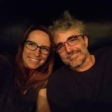
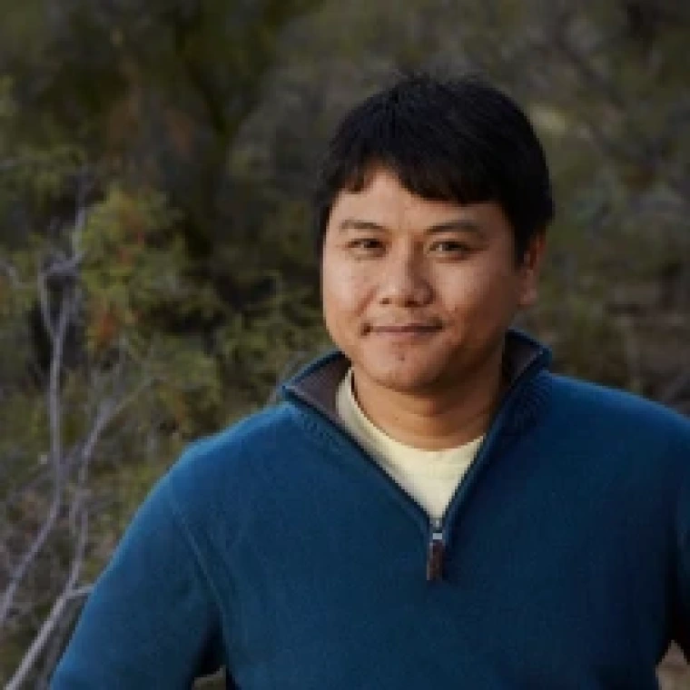
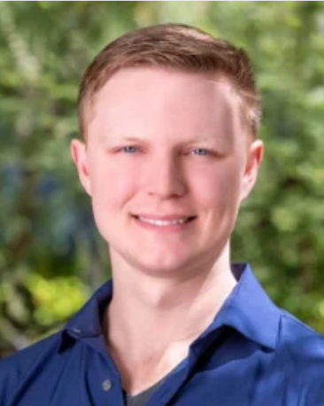
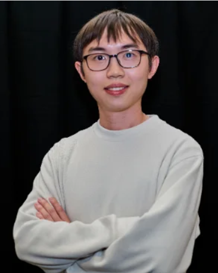

Three institutions. One team.
MESA is built by investigators, staff, and students at the University of New Mexico, the University of Arizona, and UNC-Chapel Hill / RENCI.
The team

Tyson L. Swetnam, Ph.D.
Principal Investigator · UNM

Arthur B. Maccabe, Ph.D.
Co-PI · Arizona site lead
David Ebert, Ph.D.
Co-PI · Chief AI & Data Science Officer · Arizona
Lei Cao, Ph.D.
Co-PI · Lakehouse lead · Arizona

Terrell Russell, Ph.D.
Co-PI · Data Mesh Lead · RENCI Site Lead
Alaina Martinez
Program Manager · UNM

Illyoung Choi, Ph.D.
Research Software Engineer · Arizona

Kory Draughn
Chief Technologist · RENCI
Alan King
Senior Software Developer · RENCI
Justin James
Applications Engineer · RENCI
Sarah Roberts
Research Software Engineer · Arizona

Tony Edgin
Data Curator · Arizona

Edwin Skidmore
Cloud Orchestration / Infrastructure · CyVerse

Greg Chism, Ph.D.
EOT Lead · Senior Personnel · Arizona
Jingdi Chen, Ph.D.
5G/6G Networking · Arizona
CK Chan, Ph.D.
Astronomer · Arizona
Wolfgang Jentner, Ph.D.
Human-Computer Interaction · Arizona
Junjia Guo
PhD Student · Arizona

Pengxin Wang
PhD Student · Arizona
Junyong Zhao
PhD Student · Arizona
Linan Zheng
PhD Student · Arizona